3D printing, also known as additive manufacturing, constructs objects layer by layer from digital designs. The process begins with creating a 3D model using computer-aided design (CAD) software. This model is then sliced into thin layers. The 3D printer interprets these slices and deposits material, such as plastic, metal, or resin, layer by layer, following the instructions from the digital design. Each layer fuses with the previous one, gradually forming the final object. 3D printing enables rapid prototyping, customization, and complex geometries impossible with traditional manufacturing methods, revolutionizing industries from aerospace to healthcare.
Day 2: Laser Cutting (Press-Fit Model)
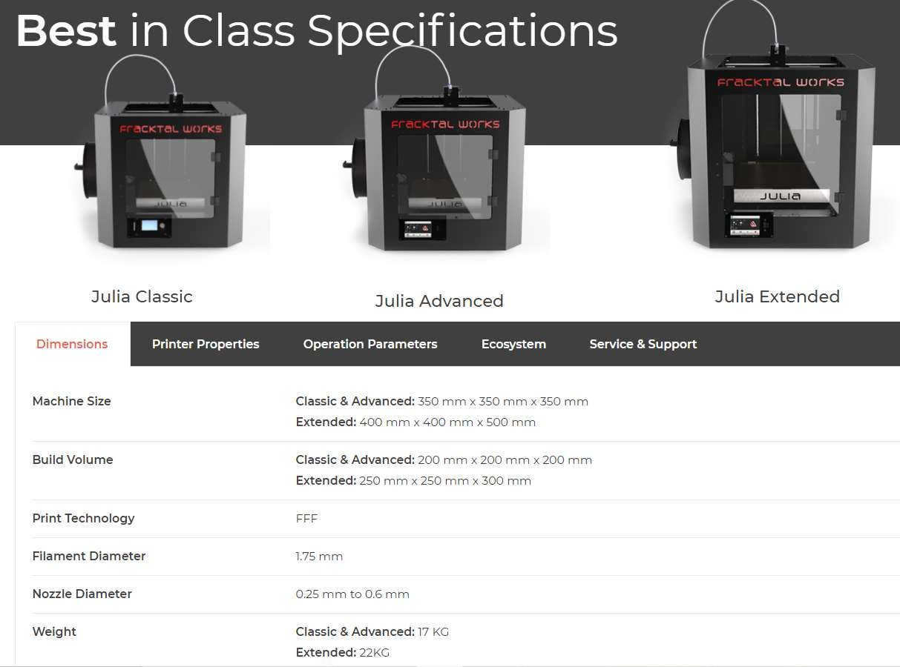
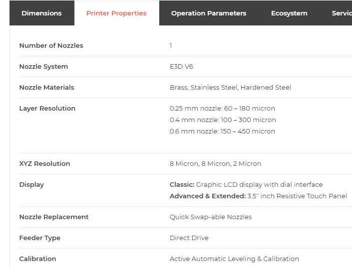
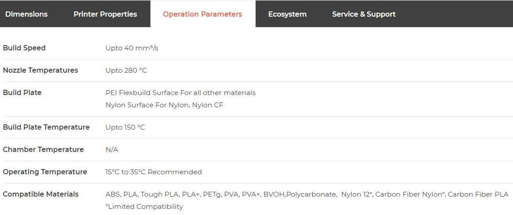
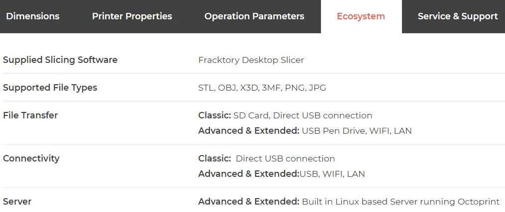
The Fractal Julia 3D printing machine is a versatile and advanced additive manufacturing device designed for professionals and enthusiasts alike. With a sleek design and robust construction, it offers high precision and reliability for a wide range of 3D printing applications.
Key specifications of the Fractal Julia 3D printing machine include:
1. Build Volume: With a spacious build area of 300mm x 300mm x 300mm (XYZ), it accommodates large-scale prints or multiple smaller objects simultaneously.
2. Printing Technology: Utilizing fused deposition modeling (FDM) or stereolithography (SLA) technology, it can produce detailed and complex prints with exceptional accuracy.
3. Printing Materials: Compatible with a variety of materials, including PLA, ABS, PETG, TPU, resin, and more, providing flexibility for different project requirements.
4. Printing Speed: Offers adjustable printing speeds to balance between print quality and efficiency, catering to both rapid prototyping and detailed projects.
5. Control Interface: Equipped with a user-friendly touchscreen interface for intuitive navigation and control of printing parameters, making it easy to operate for users of all skill levels.
6. Connectivity: Supports USB, Wi-Fi, and SD card connectivity options for seamless file transfer and remote monitoring, enhancing workflow efficiency.
7. Software Compatibility: Compatible with popular slicing software such as Cura, Simplify3D, and PrusaSlicer, ensuring compatibility with various file formats and enabling customization of print settings.
Overall, the Fractal Julia 3D printing machine offers a blend of performance, versatility, and user-friendly features, making it an ideal choice for professional designers, engineers, educators, and hobbyists seeking high-quality 3D printing capabilities.
Day 3: Operations of 3d Printing Machine
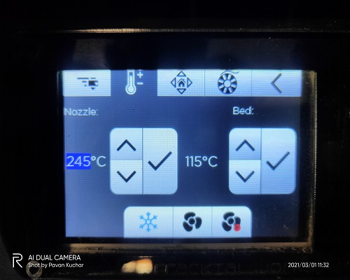
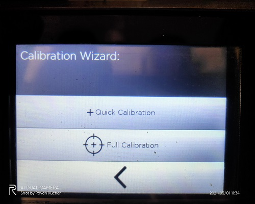
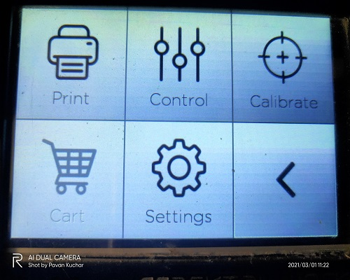
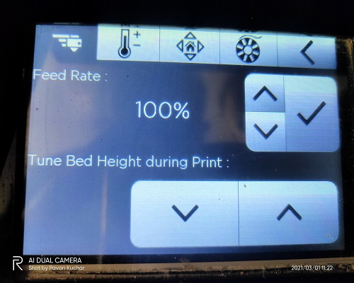
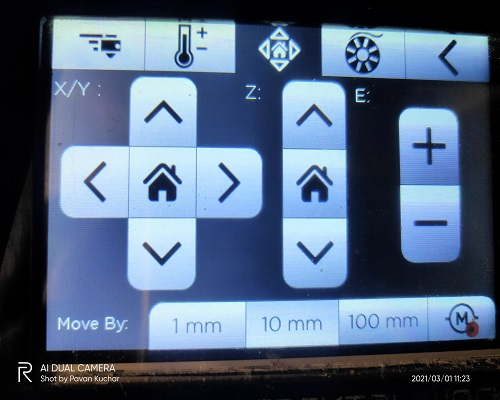
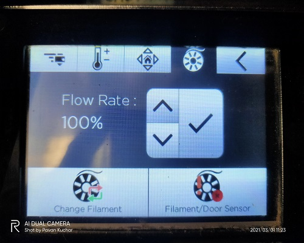
Controlling the control panel of a 3D printing machine typically involves interacting with a display screen and physical buttons or knobs. Here's a basic guide:
1. Power on/off: Use the power button to turn the printer on or off.
2. Navigation: If the control panel has a screen, navigate through menus and options using buttons or a touchscreen. Typically, you'll find options for preheating, filament loading, print settings, and more.
3. Temperature settings: Adjust the temperature of the print bed and extruder (or nozzles) using dedicated controls or menu options. This is crucial for ensuring proper adhesion and material flow during printing.
4. Start/pause/cancel: Initiate a print, pause/resume it, or cancel the print altogether using the corresponding buttons or options on the control panel.
5. Filament control: Some printers allow you to load, unload, or change filament directly from the control panel. Follow the prompts to ensure smooth filament feeding.
6. Bed leveling: Some printers offer manual bed leveling options through the control panel, allowing you to adjust the bed's height to ensure proper adhesion and print quality.
7. Status indicators: Pay attention to any status indicators or messages displayed on the control panel, which can alert you to issues like filament jams, temperature errors, or completed prints.
Always refer to the printer's user manual for specific instructions on how to navigate and utilize the control panel effectively.
Day 4: Printing Cautions (supports)
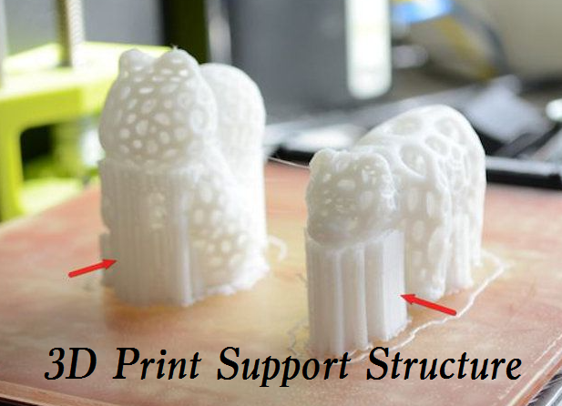
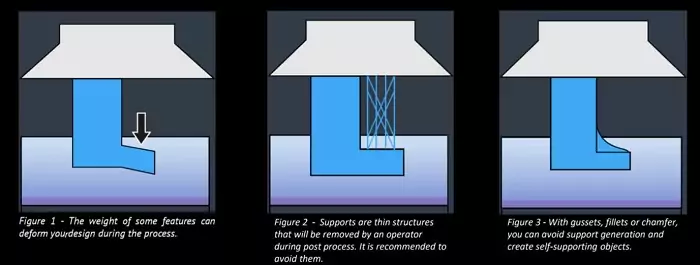
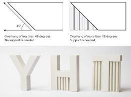
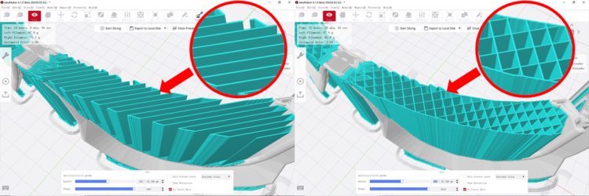
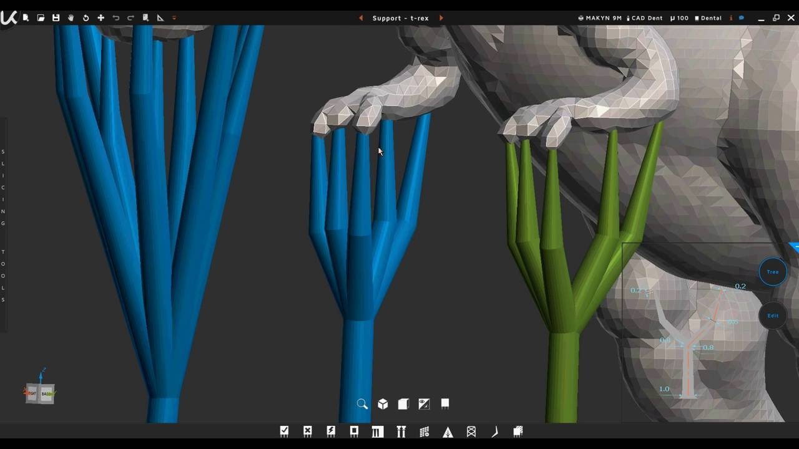
In 3D printing, supports are structures used to provide stability and prevent the collapse of overhanging or complex geometries during the printing process. Different types of supports are utilized depending on the printing technology and the requirements of the printed object. Here are some common types of supports:
1. Automatic Supports: Generated automatically by slicing software based on the design's geometry. These supports are typically optimized for the specific print job and can be adjusted or removed manually if necessary.
2. Tree Supports: Consist of interconnected branches resembling tree structures. They offer efficient material usage and easy removal but may require additional post-processing due to their complexity.
3. Linear Supports: Straight or angled supports that provide stability to overhanging features. They are simple and easy to remove but may leave visible marks on the printed surface.
4. Grid Supports: Comprise a grid-like pattern of support structures. They offer good stability and are relatively easy to remove, making them suitable for a wide range of geometries.
5. Mesh Supports: Similar to grid supports but with a denser mesh structure. They provide robust support for intricate details and delicate features but may require more effort to remove.
6. Dense Supports: Solid support structures that provide maximum stability but require more material and time to print. They are suitable for large overhangs or heavy parts but may leave marks on the print surface.
7. Custom Supports: Manually added supports tailored to specific areas of the design that require additional support. These supports offer precise control but require careful placement and may increase print time and material usage.
Each type of support has its advantages and drawbacks, and the choice depends on factors such as print geometry, material, desired surface finish, and post-processing requirements. Experimentation and experience are key to finding the most suitable support strategy for each print job.
Day 5: Final Printing
In 3D printing, supports are structures used to provide stability and prevent the collapse of overhanging or complex geometries during the printing process. Different types of supports are utilized depending on the printing technology and the requirements of the printed object. Here are some common types of supports:
1. Automatic Supports: Generated automatically by slicing software based on the design's geometry. These supports are typically optimized for the specific print job and can be adjusted or removed manually if necessary.
2. Tree Supports: Consist of interconnected branches resembling tree structures. They offer efficient material usage and easy removal but may require additional post-processing due to their complexity.
3. Linear Supports: Straight or angled supports that provide stability to overhanging features. They are simple and easy to remove but may leave visible marks on the printed surface.
4. Grid Supports: Comprise a grid-like pattern of support structures. They offer good stability and are relatively easy to remove, making them suitable for a wide range of geometries.
5. Mesh Supports: Similar to grid supports but with a denser mesh structure. They provide robust support for intricate details and delicate features but may require more effort to remove.
6. Dense Supports: Solid support structures that provide maximum stability but require more material and time to print. They are suitable for large overhangs or heavy parts but may leave marks on the print surface.
7. Custom Supports: Manually added supports tailored to specific areas of the design that require additional support. These supports offer precise control but require careful placement and may increase print time and material usage.
Each type of support has its advantages and drawbacks, and the choice depends on factors such as print geometry, material, desired surface finish, and post-processing requirements. Experimentation and experience are key to finding the most suitable support strategy for each print job.